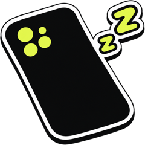
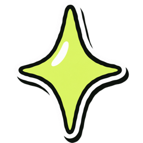
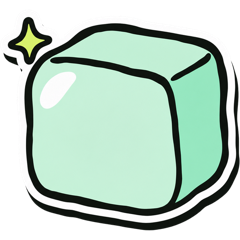
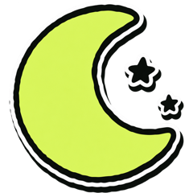
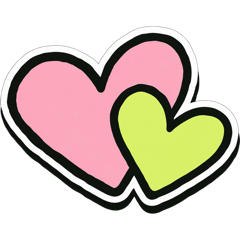
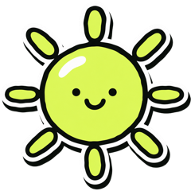

A gentle tap on the wrist
Been scrolling for a while? Your Apple Watch gives you a soft tap, so you can look up without picking up your phone again.

down, gentlyPicked up your phone for one thing and lost an hour? Pause is a kind app for women with ADHD. It asks you for one breath before you scroll.

Breathe for a minute, walk or focus in Pause, then come back.
Freezes count, so one messy day won't undo it.

W✓T✓F✓SS12 of 14 days
Mai took a sigh break before bed

Linh stayed under her goal today
An cheered your walk

You choose the apps that swallow your time. Next time you open one, Pause asks you to breathe for a minute first. A short walk or a focus timer works too.
Then your apps open for 15 minutes, and the rest is up to you.
Had a messy day? It happens. A freeze keeps your streak going, so one off day can't wipe out a good week.
You can bring a few close friends along. You'll see each other's small wins and can send a cheer.
There's no leaderboard, and nobody is keeping score.
Pause slows you down for a minute, then hands your phone back. What happens next is up to you.
You choose the ones you know are trouble. Everything else opens as usual.
A minute of breathing does it. A short walk or a focus timer counts too.

Your apps open for 15 minutes. Scroll a little or put the phone down. Either is fine.
These are drawings of the app. The app names and numbers are only examples.
A few more things Pause does while you get on with your day.
Been scrolling for a while? Your Apple Watch gives you a soft tap, so you can look up without picking up your phone again.
Bright, calm, foggy or restless? One tap on whichever fits is enough, and it never leaves your phone.
Every sigh break, walk and check-in goes on your calendar, so you can watch the small wins pile up.
Your Screen Time minutes, app names, moods and notes stay on your phone. They are never sent to us.
Take one breath with us
Breathe in through your nose
One more short sip in
Long, slow breath out
You chose a reset.
That was a sigh break. Pause has one ready whenever your head feels loud.Cyclic sighing improved mood in a randomized study of healthy adults (Balban et al., Cell Reports Medicine, 2023). Pause is not a medical product.
Come and try it. Pause is in beta on iPhone, and it's free.
The button opens TestFlight, Apple's app for trying apps early.